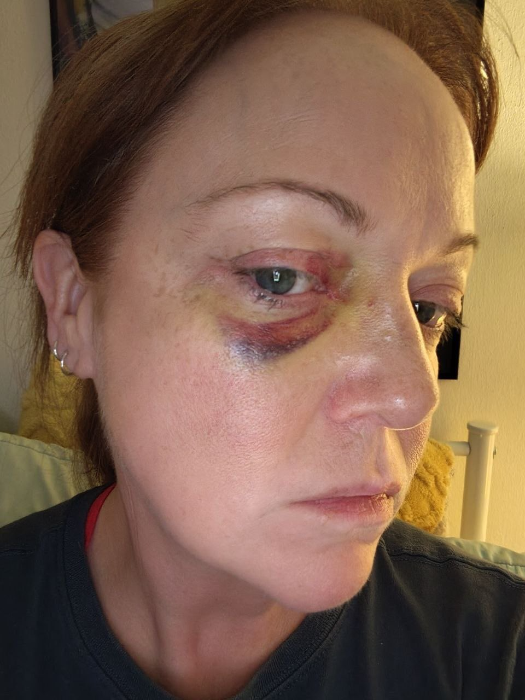

On Christmas Eve 2025, Jaime Phillips was assaulted by her boyfriend Jonathan Lee Riches at the All Season River Inn in Leavenworth, Washington. This timeline reconstructs the incident using Chelan County Sheriff’s Office records, dispatch logs, phone records, and text messages.
As of now, this is a living document being updated as records are obtained.
Jaime was on a work trip with Jonathan in Charlotte. She first discovered his infidelity and confronted him. He attacked her in the hotel and drove their rental car back to Florida, where they live. Jaime stated there is a long history of assaults in their almost 3-year dating relationship.

Jaime confronted Jonathan about communications with other women and pornography she observed on his work phone. Jonathan became enraged and struck her with a closed fist multiple times — on the side of her head, her nose, and her ribs. When Jaime grabbed her phone to dial 911, Jonathan took it from her and said “I will fucking kill you.” Jaime believes she lost consciousness. Jonathan grabbed two bags, his personal phone, Jaime’s phone, and left. He left behind his work phone.
Between 12:39 and 12:44 AM, seven missed calls from Timothy Riches are logged on JLR’s work phone (the one he left behind with Jaime).

At 12:52 AM, JLR calls a Washington, DC number. At 12:53 AM, he calls Jaime (labeled “WIFE” in his contacts).
Two more calls to the Washington, DC number.
CAD call initiated for domestic disturbance at the All Season River Inn. The call lasts approximately five minutes, ending at 09:23:44 AM.
Law enforcement arrives at the All Season River Inn. Medics get inside at 09:39:41 AM.


Deputy Kyle Talley (K29), Chelan County Sheriff’s Office, responds to the inn with four additional deputies. He activates his AXON body-worn camera. He observes bruising around Jaime’s right eye, a red mark on her nose bridge, and her nose appears broken. Jaime’s injuries are photographed by a female medic for documentation. Jaime is transported to Cascade Medical Center for evaluation.
A series of texts and calls arrive on the work phone JLR left behind: “Worst moment ever” (11:34 AM)… “I called this phone over 100 times trying to find out what is going on. You kicked me out.” (11:36 AM)… “Hello. Answer the phone. I am in the middle of no where.” (11:45 AM)… “For the sake of god. Answer the phone Magnolia. I am crying non stop. You ruined this Christmas.” (12:01 PM).


Two more missed calls from Timothy Riches at 11:57 and 11:58 AM.
Deputy Talley requests Rivercom put an ATL (Attempt to Locate) out for Jonathan. He meets Jaime at Cascade Medical Center, ER room 3. A medical release form is completed. Jaime reports Jonathan has been texting the work phone, telling her he’s “100 miles away” and “in the middle of nowhere.” The white Jeep Compass at the hotel is later confirmed to belong to another guest.
Jaime is discharged from Cascade Medical Center. Deputy Talley provides a courtesy ride back to the hotel. Deputy McComas and Talley search the room before Jaime re-enters. The hotel manager changes security codes for the front door and Jaime’s room.
“Hello Magnolia. Where you at? We need to talk.” (1:42 PM)… “Magnolia? Where are you?” (1:45 PM)… “??” (2:16 PM)
Hotel manager Tony Smith contacts Rivercom Dispatch after JLR calls the front desk trying to reach Jaime. The Sheriff had told Smith to call if JLR made contact. JLR told Tony he had to leave early and accidentally took Jaime’s phone, and that he was headed to Snoqualmie.
Deputy Kyle Talley signs an affidavit for probable cause to arrest JLR for violating RCW 9A.36.021 (Assault in the 2nd Degree DV), RCW 9A.46.020.2B (Harassment — threats to kill DV), and RCW 9A.36.150 (Interfering with the reporting of domestic violence). JLR is not booked on any of the three charges.
JLR texts Jaime: “I’m in trouble. What did you do?” He also calls, emails, and texts the hotel owners trying to get access to the room. The Sheriff had told the owners to call if they hear from him.

Jaime (Magnolia) makes multiple calls to Rivercom Dispatch. She asks to speak to a deputy after learning Deputy Talley is off for the weekend. A Chelan County deputy calls her back. She makes additional calls reporting she’s about to leave, sharing updates, and asking whether JLR has been picked up. She cancels her original flight, books with a different airline, and boards without issue. Deputy Talley is notified by text.
Jaime contacts dispatch multiple times seeking updates. She reports she was able to track Jonathan’s cell phone — he is driving eastbound through North Dakota. She also calls the Pasco County Sheriff’s Office (Port Richey, FL — the home she and JLR shared), then calls Rivercom Dispatch to confirm they forwarded the case file to Pasco. She is back home in Florida. It is not known whether he is driving back to Florida or to another location.
Jaime calls Rivercom Dispatch to provide her new phone number and share additional updates. Case marked CMPLT at 15:53:45 PM. Jonathan’s destination remains unknown.
December 29: Follow-up contact with Jaime Phillips (involvement date listed in supplemental incident report). December 30: Case 25C12789 turned over to Chelan County Prosecutors Office (TOP). Supplemental report generated March 26, 2026.
January 6, 2026: Jaime Phillips files a records request. March 20, 2026: NY Post files a records request. March 24, 2026: Angie Hughes files a records request.
View the full JLR doc-ket — filings, records, and the Google Drive folder.